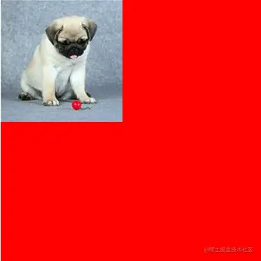

选择器与层级
css 中 ul li 与 ul>li 的区别
ul li ：后代选择器，ul 里所有的 li 元素，包括 ol 里的 li
ul>li ：子代选择器，下一级的 DOM 节点，不包括 ol 里的 li
ul>ol>li ：子代选择器必须一代接一代
属性选择器
1.E[attr]:查找指定的拥有 attr 属性的 E 标签。如查找拥有 style 属性的 li 标签
li[style]{}
2.E[attr=value]:查找拥有指定的 Attr 属性并且属性值为 value 的 E 标签。如想查找拥有 class 属性并且值为 Red 的 li 标签 =是严格匹配
li[class=red]{}
3.E[attr*=value]:查找拥有指定的 attr 属性并且属性值中包含(可以在任意位置)value 的 E 标签
li[class*=red]{}
4.E[attr^=value]:查找拥有指定的 attr 属性并且属性值以 value 开头的 E 标签
li[class^=blue]{}
5.E[attr$=value]:查找拥有指定的 attr 属性并且属性值以 value 开结束的 E 标签
li[class$=blue]{}
兄弟选择器
+：获取当前元素的相邻的满足条件的元素
下面这句样式说明查找 ：添加了.first 样式的标签的相邻的 li 元素
1.相邻
2.必须是指定类型的元素
.first + li{}
必须都是 li 元素，如果中间插入了其他元素，则+表示相邻的 li 元素，所以会不起作用
~：获取当前元素的满足条件的兄弟元素
下面样式查找添加了.first 样式的元素的所有兄弟 li 元素
1.必须是指定类型的元素
.first ~ li{}
伪类选择器
相对于父元素的结构伪类
li:first-child{color: red;}
:first-child 匹配的是某父元素的第一个子元素，可以说是结构上的第一个子元素。
li:first-of-type{
color: red;
}
li:last-of-type{
color: orange;
}
first-child 强调某个父元素的第一个子元素，而:first-of-type 强调的是特定类型的第一个，不必是第一个子元素
比如 p:first-child，都是基于 p 的父元素来进行筛选的
指定索引位置 nth-child(从 1 开始的索引||关键字||表达式）
li:nth-child(5){}
li:nth-child(even){
background-color: orange;
}
li:nth-child(odd){
background-color: pink;
}
li:nth-of-type(even){
background-color: orange;
}
li:nth-of-type(odd){
background-color: pink;
}
想为前面的 5 个元素添加样式
li:nth-last-of-type(-n+5){
font-size: 30px;
}
li:nth-of-type(-n+5){
font-size: 30px;
}
空值:没有任何的内容，连空格都没有
li:empty{
background-color: red;
}
E:target:可以为锚点目标元素添加样式，当目标元素被触发为当前锚链接的目标时，调用此伪类样式
h2:target{
color: red;
}
<a href="#title1">CSS (层叠样式表)</a>
<h2 id="title1">CSS (层叠样式表)</h2>
伪元素
div:nth-of-type(2)::before{
/**必须添加content属性，否则后期不可见**/
content: "";
/**默认是行级元素，如果想设置宽高，就必须转换为块级元素**/
position: absolute;
width: 20px;
height: 20px;
background-color: #fff;
border-radius: 10px;
left: -10px;
top: -10px;
}
div:nth-of-type(2)::after{
}
获取第一个字符：实现首字下
p::first-letter{
float: left;/**文本环绕**/
}
获取第一行内容:如果设置了::first-letter,那么无法同时设置它的样式
p::first-line{
}
设置当前选中内容的样式
它只能设置显示的样式，而不能设置内容大小
p::selection{
background-color: pink;
}
常用属性
overflow
- visible 默认值。内容不会被修剪，会呈现在元素框之外。
- hidden 内容会被修剪，并且其余内容是不可见的。
- scroll 内容会被修剪，但是浏览器会显示滚动条以便查看其余的内容。
- auto 如果内容被修剪，则浏览器会显示滚动条以便查看其余的内容。
- inherit 规定应该从父元素继承 overflow 属性的值。
overflow:scroll;
字体
字体属性的顺序：字体风格 → 字体粗细 → 字体大小 → 字体类型
p span{font:oblique bold 12px "楷体";}
阴影
添加阴影
text-shadow:offsetX offsetY blur color
多层阴影效果
.demo3{
text-shadow: 0px 0px 30px #fff,0px 0px 50px red,0px 0px 70px #fff;
}
可以添加一层阴影，也可以添加多层阴影
盒模型
content-box:你设置的 width 属性值仅仅是内容的宽度，盒子的最终的宽高值在 width 的基础上再加上 padding 和 border 的宽度(默认)
box-sizing: content-box;(默认)
border-box:你设置的 width 属性值就是盒子的最终的宽度，包含了 border 和 padding 和内容。如果添加了 padding 和 border,那么真正放置内容的区域会减小–但是它可以稳固页面的结构
box-sizing: border-box;
圆角矩形
1.设置一个值：四个角的圆角值都一样
border-radius: 10px;
2.设置两个值:第一个值控制左上/右下，第二个值控制右上/左下
border-radius: 10px 30px;
3.设置三个值：第一个值控制左上，第二值控制右上/左下，第三个值控制右下
border-radius: 10px 40px 60px;
4.设置四个值：左上 右上 右下 左
border-radius: 10px 30px 60px 100px;
添加/是用来设置当前个不同方向的半径值 水平 x 方向/垂直 y 方向
border-radius: 100px/50px;
如果想设置四个角点的不同方向上的不同圆角值
分别是水平方向的：左上，右上，右下，左下 / 垂直方向的：左上，右上，右下，左下
border-radius: 100px 0px 0px 0px/20px 0px 0px 0px;
渐变
线性渐变
方向：
to top:0deg
to right:90deg
to bottom:180deg --默认值
to left:270deg
linear-gradient(方向，开始颜色 位置，颜色2 位置，颜色3 位置...)
background: linear-gradient(to right, red 0%, red 50%, blue 50%, blue 100%);
径向渐变
形状 shape:circle:产生正方形的渐变色
ellipse:适配当前的形状,如果是正方形的容器，两者效果一样.如果宽高不一样，默认效果切换到 ellipse
at position:坐标，默认在正中心。可以赋值坐标（参照元素的左上角），也可以赋值关键字(left center right top bottom)
大小 size: closest-side：最近边；
farthest-side：最远边；
closest-corner：最近角；
farthest-corner：最远角。
默认是最远的角 farthest-corner
background: radial-gradient(red,blue);
语法：radial-gradient(形状 大小 坐标,颜色1，颜色2...)
背景
添加背景颜色
background-color: skyblue;
添加背影图片
如果图片大于容器，那么默认就从容器左上角开始放置
如果图片小于容器，那么图片默认会平铺
background-image: url("../images/share1.png")
背景颜色和背景图片是可以共同出现的
div {
width: 300px;
height: 300px;
background-color: red;
background-image: url(./imgs/1.jpg);
background-repeat: no-repeat;
}
页面展示

设置背景平铺
background-repeat:repeat (默认值)
background-repeat:no-repeat (不平铺)
background-repeat:repeat-x （水平方向平铺）
background-repeat:repeat-y （垂直方向平铺）
设置背景位置
background-positiont 决定背景图片在盒子区域的定位位置。其方位由水平和垂直决定
div {
//数字
background-position: 100px 100px;
//方向
水平方向:left,center,right
垂直方向:top,center,bottom
background-position: center center;
//比例
水平方向= |盒子宽-图片宽| * scale
垂直方向= |盒子高-图片高| * scale
background-position: 50% 50%;
}
background 缩写方式
background:color url repeat postion
background-size
background-size 决定背景图在盒子中显示的具体大小，属性值需要同时设置背景图的宽和高。
div {
//具体数值
background-size: 200px 50px;
//百分比，根据盒子的大小来定
background-size: 50% 10%;
//auto
如果宽度是具体数值，高度设置auto,则背景图片的高会根据宽度数值等比拉伸
如果高度是具体数值，宽度设置auto,则背景图片的宽会根据高度数值等比拉伸
如果宽高都设置auto,直接使用原背景图的宽高
background-size: 200px auto;
//cover英文意思覆盖，那么其涵义就是要求背景图片覆盖整个盒子。
background-size: cover;
//contain,要求背景图片的宽和高必须满足其中一个覆盖盒子就行，
当图片宽和高都小于盒子时图片会被等比拉伸，
如果图片宽或高大于等于盒子宽或者高就停止拉伸。
background-size:contain;
}
background-clip 和 background-origin
background-clip 决定了背景颜色从盒子的什么位置开始渲染
background-origin 决定了背景图片从盒子的什么位置开始渲染
background-clip: border-box（从盒子边距开始）
background-clip: content-box（从盒子内容开始）
background-clip: padding-box（默认值，从盒子padding开始）
过渡
简写：transition:属性名称 过渡时间 时间函数 延迟
transition: left 2s linear 0s;
为多个样式同时添加过渡效
transition: left 2s linear 0s,background-color 5s linear 0s;
1.所有样式的过渡效果一样
2.效率低下，它会去查询所有添加的样式
3.建议：以后不要这么写
4.steps(4):可以让过渡效果分为指定的几次来完成 等于说是一帧一帧的跳动
transition:all 2s steps(4);
transform 二维变换
使用 transform 实现元素的移动 a.移动是参照元素的左上角 b.执行完毕之后会恢复到原始状态
/*transform: translate(400px,500px);*/ X,Y轴的移动
transform:translateY(300px);
transform:scaleY(0.5); 放大和缩小，1为灵界点
transform-origin: left top; 可以设置旋转的中心
transform: translateX(700px) rotate(-90deg);
transform:skew(-30deg);斜切
动画
添加动画效果
1.animation-name:指定动画名称
animation-name: moveTest;
2.设置动画的总耗时
animation-duration: 2s;
3.设置动画的播放次数，默认为 1 次 可以指定具体的数值，也可以指定 infinite(无限次)
animation-iteration-count: 1/infinite;
4.设置交替动画 alternate:来回交替
animation-direction: alternate;
5.设置动画的延迟
animation-delay: 2s;
6.设置动画结束时的状态：默认情况下，动画执行完毕之后，会回到原始状态
forwards:会保留动画结束时的状态，在有延迟的情况下，并不会立刻进行到动画的初始状态
backwards:不会保留动画结束时的状态，在添加了动画延迟的前提下，如果动画有初始状态，那么会立刻进行到初始状态
both:会保留动画的结束时状态，在有延迟的情况下也会立刻进入到动画的初始状态
animation-fill-mode: both;
7.动画的时间函数
animation-timing-function: linear; （这个表示匀速，可以开始比较满或者快或者）
设置动画的播放状态 paused:暂停 running:播放
animation-play-state: running;
动画 moveTest
@keyframes moveTest {
百分比是指整个动画耗时的百分比 10s
from{
transform: translate(0,0) rotate(45deg);
}
50%{
transform: translate(0,500px);
}
to{
transform: translate(500px,600px);
}
}
多列布局
1.设置列数
column-count: 3;
2.添加列间隙样式,与边框样式的添加一样
column-rule: dashed 3px red;
3。设置列间隙大小
column-gap: 50px;
4.设置列宽
原则：取大优先
1.如果人为设置宽度更大，则取更大的值，但是会填充整个屏幕，意味最终的宽度可能也会大于设置的宽度–填充满整个屏幕
2.如果人为设置宽度更小，使用默认计算的宽度
column-width: 200px;
设置上面这些属性应该在文字的盒子上
设置跨列显示 1 / all
column-span: all;